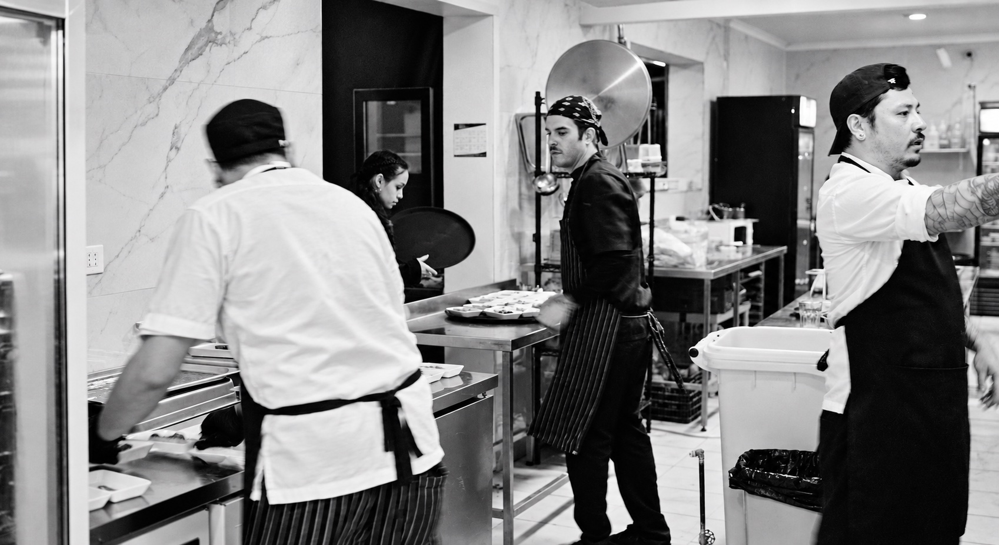
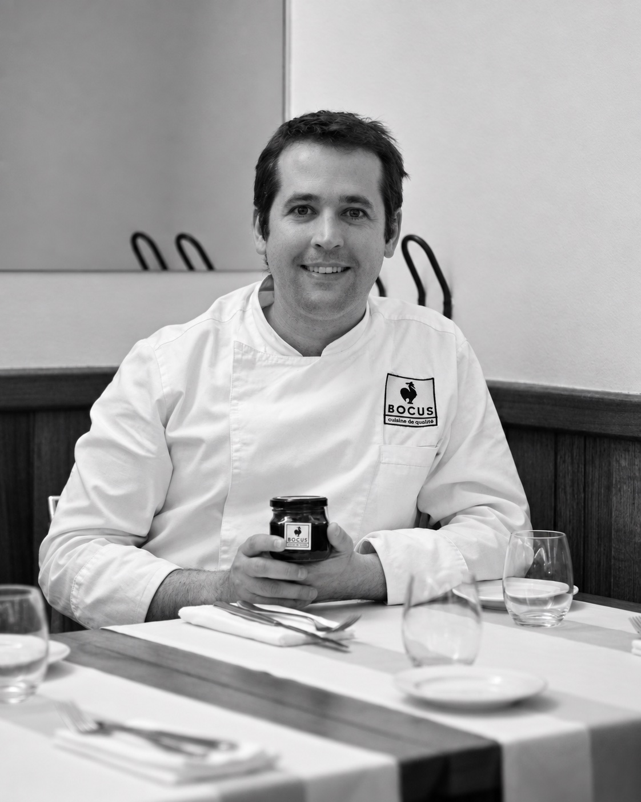
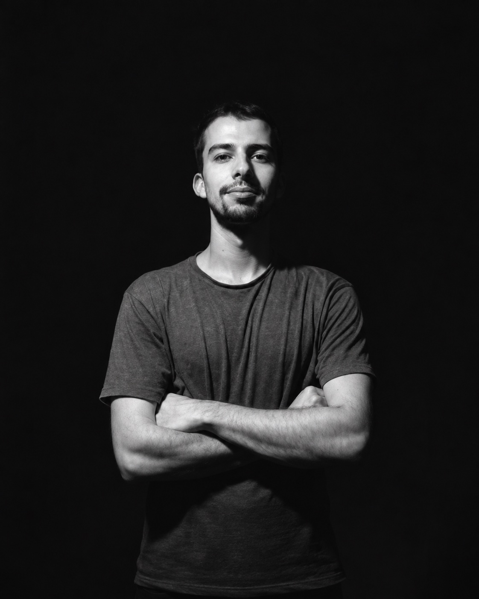
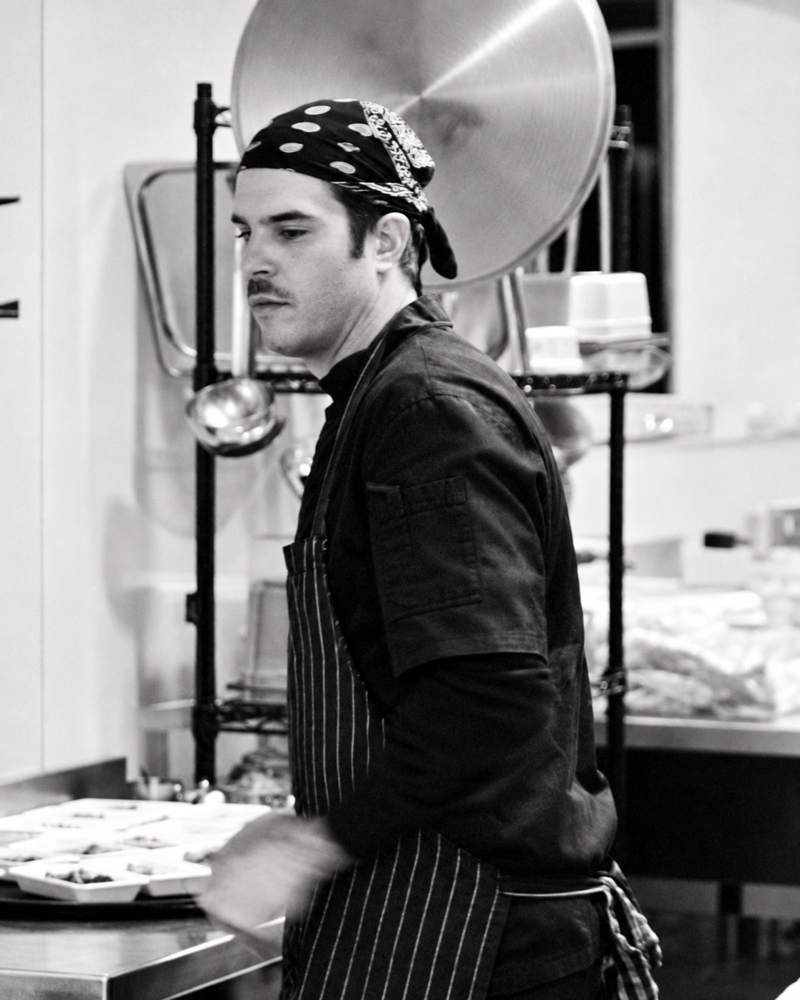
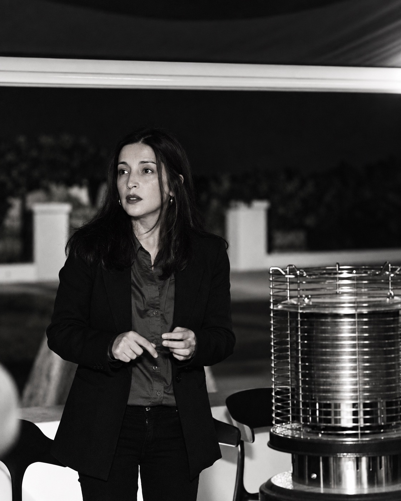

Dar forma al concepto
Definimos propuesta, carta, cocina, recorrido del cliente y modelo económico como partes de una misma idea.
Creación y gestión gastronómica · desde 2019
Somos un equipo que ha pasado de imaginar restaurantes a dirigir sus cocinas, equipos y números. Lo que aprendimos haciendo es lo que hoy ponemos al servicio de otros proyectos.

Una carta necesita sabor. También margen, abastecimiento y un equipo capaz de repetirla mañana.
Cómo empezó
Nicolás y Louis Le Baux se formaron como cocineros y aprendieron el oficio entre producción, servicio y dirección. Nicolás inició Solución Horeca en 2019; cuando Louis se sumó, propuso Oreka: equilibrio en euskera.
La palabra terminó describiendo nuestra manera de trabajar. Buscamos que el producto sea bueno, que el negocio tenga margen y que el equipo pueda conducirlo sin depender de sus fundadores.
Lo que hacemos
Podemos dar forma a un concepto nuevo, ordenar un restaurante en marcha o preparar su siguiente etapa. Trabajamos con quienes después tendrán que ejecutarlo.
Definimos propuesta, carta, cocina, recorrido del cliente y modelo económico como partes de una misma idea.
Ordenamos producción, compras, inventarios, servicio y responsabilidades para que el equipo pueda sostener el estándar.
Leemos costos, ventas y márgenes junto a quienes hacen el trabajo. Los datos sirven cuando ayudan a corregir a tiempo.
Nuestras marcas
En Bocus, Parigó y Cadaqués, el grupo toma decisiones todos los días sobre producto, producción, costos, personas y clientes. Esa práctica mantiene nuestro criterio cerca de la realidad.
 01
01Llevamos cocina francesa a una experiencia de compra online, con producto, preparación y despacho pensados en conjunto.
Explorar BocusUna casa en La Pastora convertida en restaurante: carta breve, cocina, salón y panadería coordinados para cada servicio.
Conocer Parigó 03
03Pan de masa madre y fermentación lenta. Detrás de cada vitrina hay producción, tiempos y atención que sostener.
Conocer CadaquésLas marcas del grupo mantienen sus propias identidades y entidades operadoras. Oreka aporta dirección, método y aprendizaje compartido.
Tecnología hecha desde la operación
UN PROYECTO DEL ECOSISTEMATOTO aborda dos momentos concretos: la información que recibe el cliente y los movimientos de producto que el equipo necesita seguir.
La carta digital que el restaurante mantiene al día y que el cliente abre al escanear un código QR.
Visitar TOTO Carta QRUn sistema en desarrollo para seguir existencias y traspasos entre bodegas, producción y puntos de venta.
Diseñado junto a la operación; alcance y piloto en evolución.Cómo trabajamos
Observamos un servicio, elegimos cambios concretos y los probamos con el equipo. El resultado tiene que poder sostenerse cuando nosotros ya no estemos ahí.
Lo que hemos hecho
Una cocina que debía atender dos canales, una carta por desarrollar, una operación completa que sostener. Así hemos construido la experiencia de Oreka: trabajando con quienes hacen posible cada servicio.
Diseñamos una panadería y sus procesos dentro de una institución gastronómica de Santiago.
Trabajamos los flujos de una cocina que debe responder a salón y delivery al mismo tiempo.
Desarrollamos carta y producto junto al equipo gastronómico.
Administramos Don Carlos durante tres años y creamos Don Clan como un nuevo espacio en su segundo piso.
Quiénes somos
Nicolás inició Oreka y Louis se sumó como socio. Hoy trabajan con Freddy y Daniela para conectar dirección, control, desarrollo culinario y experiencia de cliente. Así pasamos de una decisión a una forma de hacerla realidad.

Detecta oportunidades, define el rumbo y acompaña las decisiones de apertura y crecimiento.

Da continuidad al día a día: logística, inventarios, costos y procesos que deben funcionar juntos.

Convierte ideas de cocina en producto y estándares que el equipo puede ejecutar con consistencia.

Conecta equipos, comunicación y experiencia de cliente con decisiones que se puedan sostener.
Hablemos
Podemos empezar por una carta, una cocina, un equipo o la operación completa. La primera conversación sirve para entender dónde está el trabajo.
Escribir a Oreka hola@solucionoreka.com